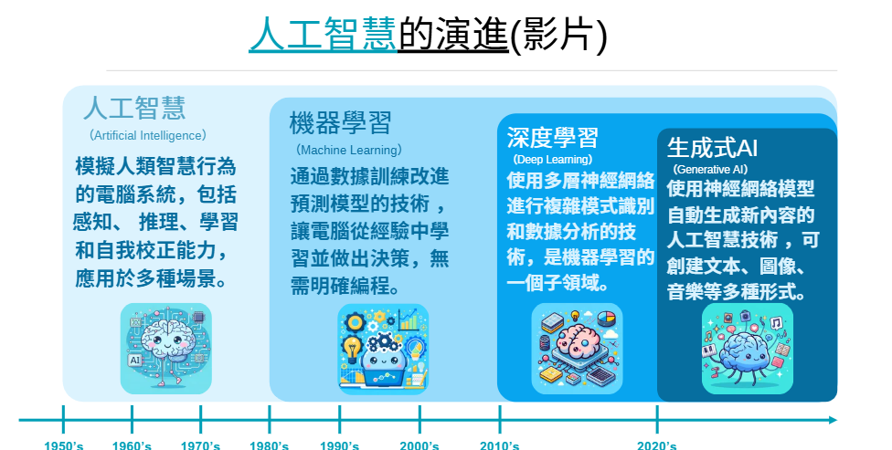

生成式AI
融入教學工作坊
AI 不是取代老師，而是協助老師提升效率

許凱琳 老師
新北市大豐國小 自然教師
ABOUT THE INSTRUCTOR
許凱琳
新北市大豐國小 自然教師
- ▸ 115年新北市特殊優良教師
- ▸ ViewSonic 創新教師獎 TOP 10
- ▸ 教育部 B5-1 生成式AI工作坊講師
- ▸ Gemini AI 認證講師
- ▸ Apple Learning Coach
- ▸ Apple 專業學習專家 (APLS)
- ▸ iPad 種子教師 2019–2026
- ▸ 新北市智慧學習輔導小組
本次研習目標
-
🎯
了解生成式AI的發展歷程與技術原理
-
🔧
認識常見AI工具，學會選擇適合的AI
-
💻
親手體驗AI工具，融入教學設計與課程規劃
-
⚖️
培養教師AI素養，掌握AI倫理與正確使用原則
AI 正在改變教育現場
學生早已在使用AI
學生在課堂外已自行使用各種AI工具，教師需要了解其能力與限制。
AI 是學習新夥伴
AI能提供個人化學習體驗，成為學生24小時都可諮詢的智慧夥伴。
教師角色更加重要
教師引導學生正確使用AI、培養批判思考，比以往更不可或缺。
提升教學效率
AI協助備課、出題、批改，讓教師有更多時間專注於與學生互動。

AI 發展演進歷程
🤖 人工智慧 AI
讓機器模仿人類思考，開啟AI研究時代
📊 Machine Learning
從大量資料學習・推薦演算法 → YouTube推薦、社群媒體、同溫層現象
🧠 Deep Learning
多層神經網路・例：Siri、語音辨識、即時翻譯、AlphaGo
✨ Generative AI
AI能創造內容：文字・圖片・音樂・簡報・程式碼
🚀 ChatGPT 問世
生成式AI快速普及，AI正式進入日常生活！
機器學習 vs 深度學習：實際例子
📊 機器學習 Machine Learning
亞馬遜推薦系統
分析用戶購買歷史和瀏覽行為，推薦可能感興趣的產品
Google PageRank 算法
優化搜尋引擎結果，根據網頁連結關係排序
Gmail 垃圾郵件過濾
自動識別和阻擋垃圾郵件
🧠 深度學習 Deep Learning
AlphaGo
深度神經網絡擊敗圍棋世界冠軍李世乭
特斯拉 Autopilot
識別道路、行人和車輛，實現自動駕駛
Facebook 圖像識別
自動辨識照片中的人臉並標註姓名
Quick, Draw!
透過遊戲，直接體驗 AI 如何「學習」
🖱 使用滑鼠繪圖
AI 猜測你畫的是什麼
🧩 了解 AI 學習方式
資料訓練・特徵辨識・類神經網路
常見生成式AI介紹
🔍 搜尋型AI（通用對話）
📁 限定資料範圍AI
AIPACK 概念
AI 如何融入教師的專業教學知識
🧠
AI + PCK
學科教學知識（PCK）結合AI能力，讓教學更有深度、更有效率。
🤝
教師 × AI 協作
教師保有教學核心，AI作為強力輔助工具，提升教學品質。
🎓
教師是引導者
教師引導學生善用AI，培養正確的AI應用素養與批判思考。
🌱
學生的成長
在教師引導下，學生學會與AI合作，為未來AI時代做好準備。
教師端 AI 應用
備課與教學設計
- ✦ 課程設計與規劃
- ✦ 教案自動生成
- ✦ 差異化教學設計
- ✦ 多元教材製作
評量與命題
- ✦ 題目快速生成
- ✦ 多元測驗設計
- ✦ 學習單製作
- ✦ 素養題設計
作文批改
- ✦ 康軒AI寫作批改
- ✦ 酷英AI增錯
- ✦ 即時回饋建議
- ✦ 寫作引導輔助
🔷 Gemini 操作體驗
- 1
開啟 Gemini，試試 AI 問答
- 2
請AI幫你生成一份教案
- 3
設計一個教學活動
- 4
請AI出幾道測驗題目
- 5
試試 Deep Research 深度研究
💡 Prompt 小提示
「我是國小○年級○科老師，請幫我設計一個關於【主題】的教案，包含學習目標、教學活動和評量方式。」
📒 NotebookLM 體驗
- 1
開啟 NotebookLM，建立新筆記本
- 2
上傳你的教學資料（PDF/文件）
- 3
讓AI幫你摘要內容
- 4
整理重點，生成學習指南
- 5
試試 Audio Overview 功能
🎯 NotebookLM 特色
- ✦ 只回答上傳資料的內容
- ✦ 自動摘要與問答
- ✦ 生成 Podcast 音頻
- ✦ 支援多種文件格式
學生端 AI 應用
🎯
個人化學習
- ✦ 一對一智慧學習夥伴
- ✦ 即時問題解答
- ✦ 自適應學習進度
📖
學習輔助
- ✦ 語音辨識輔助
- ✦ AI引導式學習
- ✦ AI寫作協助
🛠 學生適用AI工具
🇬🇧 酷英
AI寫作增錯・英語學習應用・語音辨識
🎯 因材網
引導式寫作・個人化學習路徑
☕ Edcafe AI
AI助教・錯字修正・AI互動問答
🤖 南一 NaniBot
AI學習互動・教學輔助應用
AI 使用注意事項
資訊正確性
AI可能產生錯誤資訊（幻覺），使用前需要再次查證，不能直接照單全收。
隱私與個資
絕對避免輸入學生個資，注意資料安全，保護師生隱私。
AI 倫理
尊重智慧財產權，AI生成的內容需標注來源，不可過度依賴AI。
教師角色重要性
AI是輔助工具，教師仍是教學核心，引導學習的責任在教師。
AI 不是 取代老師
而是協助老師提升效率
幫助學生進行更個人化的學習體驗 🌟
許凱琳 老師 ・ 新北市大豐國小 ・ 教育部 B5-1 生成式AI工作坊